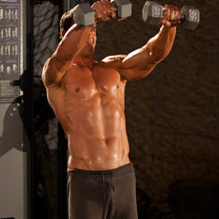
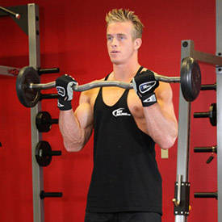
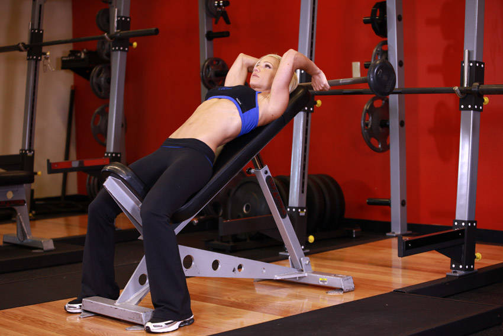

- Shoulders
- Reverse Flyes
- Side Laterals to Front Raise
- One-Arm Side Laterals
- Biceps
- Concentration Curls (Biceps Extensions)
- EZ-Bar Curl (Forearms Extensions)
- Triceps
- Incline Barbell Triceps Extension
- Triceps Pushdownt
- Tricep Dumbbell Kickback
- Standing Dumbbell Triceps Extension
- Forearms
- Rickshaw Carry
- Wrist Roller
Arms
Shoulders
Exercises
Reverse Flyes
Type: Strength
Main Muscle Worked: Posterior Deltoid
Equipment: Dumbbell
Level: Beginner
Reverse Flyes Images
{kind=link}
{kind=link}
Reverse Flyes Instructions
- To begin, lie down on an incline bench with the chest and stomach pressing against the incline. Have the dumbbells in each hand with the palms facing each other (neutral grip)
- Extend the arms in front of you so that they are perpendicular to the angle of the bench. The legs should be stationary while applying pressure with the ball of your toes. This is the starting position.
- Maintaining the slight bend of the elbows, move the weights out and away from each other (to the side) in an arc motion while exhaling. Tip: Try to squeeze your shoulder blades together to get the best results from this exercise.
- The arms should be elevated until they are parallel to the floor.
- Feel the contraction and slowly lower the weights back down to the starting position while inhaling.
- Repeat for the recommended amount of repetitions.
Side Laterals to Front Raise
Type: Strength
Main Muscle Worked: Anterior Deltoid
Equipment: Dumbbell
Level: Beginner
Side Laterals to Front Raise Images:
{kind=link}
{kind=link}
{kind=link}
{kind=link}
Side Laterals to Front Raise Instructions
- In a standing position, hold a pair of dumbbells at your side. This will be your starting position
- Keeping your elbows slightly bent, raise the weights directly in front of you to shoulder height, avoiding any swinging or cheating.
- At the top of the exercise move the weights out in front of you, keeping your arms extended.
- Lower the weights with a controlled motion
- On the next repetition, raise the weights in front of you to shoulder height before moving the weights laterally to your sides.
- Lower the weights to the starting position.
One-Arm Side Laterals
Type: Strength
Main Muscle Worked: Middle Deltoid
Equipment: Dumbbell
Level: Beginner
One-Arm Side Laterals Images
{kind=link}
{kind=link}
One-Arm Side Laterals Instructions
- Pick a dumbbell and place it in one of your hands. Your non lifting hand should be used to grab something steady such as an incline bench press. Lean towards your lifting arm and away from the hand that is gripping the incline bench as this will allow you to keep your balance
- Stand with a straight torso and have the dumbbell by your side at arm’s length with the palm of the hand facing you. This will be your starting position.
- While maintaining the torso stationary (no swinging), lift the dumbbell to your side with a slight bend on the elbow and your hand slightly tilted forward as if pouring water in a glass. Continue to go up until you arm is parallel to the floor. Exhale as you execute this movement and pause for a second at the top.
- Lower the dumbbell back down slowly to the starting position as you inhale.
- Repeat for the recommended amount of repetitions.
- Switch arms and repeat the exercise.
s
Biceps
Exercises
Concentration Curls (Biceps Extensions)
Type : Strength
Main Muscle Worked: Biceps
Equipment: Dumbbell
Level: Beginner
Concentration Curls (Biceps Extensions)Images

{kind=link}
Concentration Curls Instructions
- Sit down on a flat bench with one dumbbell in front of you between your legs. Your legs should be spread with your knees bent and feet on the floor.
- Use your right arm to pick the dumbbell up. Place the back of your right upper arm on the top of your inner right thigh. Rotate the palm of your hand until it is facing forward away from your thigh. Tip: Your arm should be extended and the dumbbell should be above the floor. This will be your starting position.
- While holding the upper arm stationary, curl the weights forward while contracting the biceps as you breathe out. Only the forearms should move. Continue the movement until your biceps are fully contracted and the dumbbells are at shoulder level. Tip: At the top of the movement make sure that the little finger of your arm is higher than your thumb. This guarantees a good contraction. Hold the contracted position for a second as you squeeze the biceps.
- Slowly begin to bring the dumbbells back to starting position as your breathe in. Caution: Avoid swinging motions at any time.
- Repeat for the recommended amount of repetitions. Then repeat the movement with the left arm.
EZ-Bar Curl (Forearms Extensions)
Type: Strength
Main Muscle Worked: Biceps
Equipment: E-Z Curl Bar
Level: Beginner
EZ-Bar Curl (Forearms Extensions) Images
{kind=link}
{kind=link}
EZ-Bar Curl Instructions
- Stand up straight while holding an EZ curl bar at the wide outer handle. The palms of your hands should be facing forward and slightly tilted inward due to the shape of the bar. Keep your elbows close to your torso. This will be your starting position.
- Now, while keeping your upper arms stationary, exhale and curl the weights forward while contracting the biceps. Focus on only moving your forearms.
- Continue to raise the weight until your biceps are fully contracted and the bar is at shoulder level. Hold the top contracted position for a moment and squeeze the biceps.
- Then inhale and slowly lower the bar back to the starting position.
- Repeat for the recommended amount of repetitions.
Triceps
Exercise
Incline Barbell Triceps Extension
Type: Strength
Main Muscle Worked:Triceps
Equipment: Barbell
Level: Intermediate
Incline Barbell Triceps Extension imges
{kind=link}
{kind=link}
Incline Barbell Triceps Extension instruction
- Hold a barbell with an overhand grip (palms down) that is a little closer together than shoulder width.
- Lie back on an incline bench set at any angle between 45-75-degrees.
- Bring the bar overhead with your arms extended and elbows in. The arms should be in line with the torso above the head. This will be your starting position.
- Now lower the bar in a semicircular motion behind your head until your forearms touch your biceps. Inhale as you perform this movement. Tip: Keep your upper arms stationary and close to your head at all times. Only the forearms should move.
- Return to the starting position as you breathe out and you contract the triceps. Hold the contraction for a second.
- Repeat for the recommended amount of repetitions.
Triceps Pushdown
Type: Strength
Main Muscle Worked:Triceps
Equipment: Cable
Level: Beginner
Triceps Pushdown images

{kind=link}
Triceps Pushdown Instruction
- Attach a straight or angled bar to a high pulley and grab with an overhand grip (palms facing down) at shoulder width.
- Lie back on an incline bench set at any angle between 45-75-degrees.
- Standing upright with the torso straight and a very small inclination forward, bring the upper arms close to your body and perpendicular to the floor. The forearms should be pointing up towards the pulley as they hold the bar. This is your starting position.
- Using the triceps, bring the bar down until it touches the front of your thighs and the arms are fully extended perpendicular to the floor. The upper arms should always remain stationary next to your torso and only the forearms should move. Exhale as you perform this movement.
- After a second hold at the contracted position, bring the bar slowly up to the starting point. Breathe in as you perform this step.
- Repeat for the recommended amount of repetitions.
Tricep Dumbbell Kickback
Type: Strength
Main Muscle Worked:Triceps
Equipment: Dumbbell
Level: Beginner
Tricep Dumbbell Kickback Images
{kind=link}
{kind=link}
Tricep Dumbbell Kickback Instruction
- Start with a dumbbell in each hand and your palms facing your torso. Keep your back straight with a slight bend in the knees and bend forward at the waist. Your torso should be almost parallel to the floor. Make sure to keep your head up. Your upper arms should be close to your torso and parallel to the floor. Your forearms should be pointed towards the floor as you hold the weights. There should be a 90-degree angle formed between your forearm and upper arm. This is your starting position.
- Now, while keeping your upper arms stationary, exhale and use your triceps to lift the weights until the arm is fully extended. Focus on moving the forearm.
- After a brief pause at the top contraction, inhale and slowly lower the dumbbells back down to the starting position.
- Repeat the movement for the prescribed amount of repetitions.
Standing Dumbbell Triceps Extension
Type: Strength
Main Muscle Worked:Triceps
Equipment:Dumbbell
Level:Beginner
Standing Dumbbell Triceps Extension Images
{kind=link}
{kind=link}
Standing Dumbbell Triceps Extension Instruction
- To begin, stand up with a dumbbell held by both hands. Your feet should be about shoulder width apart from each other. Slowly use both hands to grab the dumbbell and lift it over your head until both arms are fully extended.
- The resistance should be resting in the palms of your hands with your thumbs around it. The palm of the hands should be facing up towards the ceiling. This will be your starting position.
- Keeping your upper arms close to your head with elbows in and perpendicular to the floor, lower the resistance in a semicircular motion behind your head until your forearms touch your biceps. Tip: The upper arms should remain stationary and only the forearms should move. Breathe in as you perform this step.
- Go back to the starting position by using the triceps to raise the dumbbell. Breathe out as you perform this step.
- Repeat for the recommended amount of repetitions.
Forearms
Exercises
Rickshaw Carry (Forearms Extensions)
Type: Strength
Main Muscle Worked: Forearms
Equipment: Other
Level: Intermediate
Rickshaw Carry (Forearms Extensions)Images
{kind=link}
{kind=link}
Rickshaw Carry Instructions
- Position the frame at the starting point, and load with the appropriate weight. Standing in the center of the frame, begin by gripping the handles and driving through your heels to lift the frame. Ensure your chest and head are up and your back is straight.
- Immediately begin walking briskly with quick, controlled steps. Keep your chest up and head forward, and make sure you continue breathing. Bring the frame to the ground after you have reached the end point.
Wrist Roller (Forearms Extensions)
Type: Strength
Main Muscle Worked: Forearms
Equipment: Other
Level: Beginner
Wrist Roller (Forearms Extensions) Images
{kind=link}
{kind=link}
Wrist Roller Instructions
- To begin, stand straight up grabbing a wrist roller using a pronated grip (palms facing down). Your feet should be shoulder width apart.
- Slowly lift both arms until they are fully extended and parallel to the floor in front of you. Note: Make sure the rope is not wrapped around the roller. Your entire body should be stationary except for the forearms. This is the starting position.
- Rotate one wrist at a time in an upward motion to bring the weight up to the bar by rolling the rope around the roller.
- Once the weight has reached the bar, slowly begin to lower the weight back down by rotating the wrist in a downward motion until the weight reaches the starting position.
- Repeat for the prescribed amount of repetitions in your program.